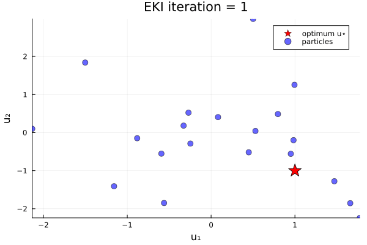
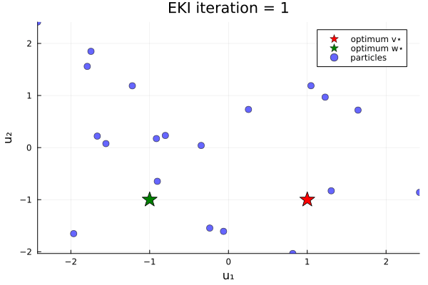

Minimization of simple loss functions
The full code is found in the examples/ directory of the github repository
First we load the required packages.
using Distributions, LinearAlgebra, Random, Plots
using EnsembleKalmanProcesses
using EnsembleKalmanProcesses.ParameterDistributions
const EKP = EnsembleKalmanProcessesEnsembleKalmanProcessesLoss function with single minimum
Here, we minimize the loss function
\[G₁(u) = \|u - u_*\| ,\]
where $u$ is a 2-vector of parameters and $u_*$ is given; here $u_* = (-1, 1)$.
u★ = [1, -1]
G₁(u) = [sqrt((u[1] - u★[1])^2 + (u[2] - u★[2])^2)]We set the seed for pseudo-random number generator for reproducibility.
rng_seed = 41
rng = Random.seed!(Random.GLOBAL_RNG, rng_seed)We set a stabilization level, which can aid the algorithm convergence
dim_output = 1
stabilization_level = 1e-3
Γ_stabilization = stabilization_level * Matrix(I, dim_output, dim_output)1×1 Matrix{Float64}:
0.001The functional is positive so to minimize it we may set the target to be 0,
G_target = [0]Prior distributions
As we work with a Bayesian method, we define a prior. This will behave like an "initial guess" for the likely region of parameter space we expect the solution to live in. Here we define $Normal(0,1)$ distributions with no constraints
prior_u1 = constrained_gaussian("u1", 0, 1, -Inf, Inf)
prior_u2 = constrained_gaussian("u1", 0, 1, -Inf, Inf)
prior = combine_distributions([prior_u1, prior_u2])In this example there are no constraints, therefore no parameter transformations.
Calibration
We choose the number of ensemble members and the number of iterations of the algorithm
N_ensemble = 20
N_iterations = 10The initial ensemble is constructed by sampling the prior
initial_ensemble = EKP.construct_initial_ensemble(rng, prior, N_ensemble)2×20 Matrix{Float64}:
-1.50205 0.950787 -2.13389 1.77371 … 0.994771 0.797202 -1.15774
1.83923 -0.556855 0.0995651 -2.24101 1.25459 0.487004 -1.40943We then initialize the Ensemble Kalman Process algorithm, with the initial ensemble, the target, the stabilization and the process type (for EKI this is Inversion, initialized with Inversion()). We also remove the cutting-edge defaults and instead use the vanilla options.
ensemble_kalman_process = EKP.EnsembleKalmanProcess(
initial_ensemble,
G_target,
Γ_stabilization,
Inversion(),
scheduler = DefaultScheduler(1),
accelerator = DefaultAccelerator(),
localization_method = EnsembleKalmanProcesses.Localizers.NoLocalization(),
)Then we calibrate by (i) obtaining the parameters, (ii) calculate the loss function on the parameters (and concatenate), and last (iii) generate a new set of parameters using the model outputs:
for i in 1:N_iterations
params_i = get_u_final(ensemble_kalman_process)
g_ens = hcat([G₁(params_i[:, i]) for i in 1:N_ensemble]...)
EKP.update_ensemble!(ensemble_kalman_process, g_ens)
endand visualize the results:
u_init = get_u_prior(ensemble_kalman_process)
anim_unique_minimum = @animate for i in 1:N_iterations
u_i = get_u(ensemble_kalman_process, i)
plot(
[u★[1]],
[u★[2]],
seriestype = :scatter,
markershape = :star5,
markersize = 11,
markercolor = :red,
label = "optimum u⋆",
)
plot!(
u_i[1, :],
u_i[2, :],
seriestype = :scatter,
xlims = extrema(u_init[1, :]),
ylims = extrema(u_init[2, :]),
xlabel = "u₁",
ylabel = "u₂",
markersize = 5,
markeralpha = 0.6,
markercolor = :blue,
label = "particles",
title = "EKI iteration = " * string(i),
)
endThe results show that the minimizer of $G_1$ is $u=u_*$.
Loss function with two minima
Now let's do an example in which the loss function has two minima. We minimize the loss function
\[G₂(u) = \|u - v_{*}\| \|u - w_{*}\| ,\]
where again $u$ is a 2-vector, and $v_{*}$ and $w_{*}$ are given 2-vectors. Here, we take $v_{*} = (1, -1)$ and $w_{*} = (-1, -1)$.
v★ = [1, -1]
w★ = [-1, -1]
G₂(u) = [sqrt(((u[1] - v★[1])^2 + (u[2] - v★[2])^2) * ((u[1] - w★[1])^2 + (u[2] - w★[2])^2))]The procedure is same as the single-minimum example above.
We set the seed for pseudo-random number generator for reproducibility,
rng_seed = 10
rng = Random.seed!(Random.GLOBAL_RNG, rng_seed)A positive function can be minimized with a target of 0,
G_target = [0]1-element Vector{Int64}:
0We choose the stabilization as in the single-minimum example
Prior distributions
We define the prior. We can place prior information on e.g., $u₁$, demonstrating a belief that $u₁$ is more likely to be negative. This can be implemented by setting a bias in the mean of its prior distribution to e.g., $-0.5$:
prior_u1 = constrained_gaussian("u1", -0.5, sqrt(2), -Inf, Inf)
prior_u2 = constrained_gaussian("u1", 0, sqrt(2), -Inf, Inf)
prior = combine_distributions([prior_u1, prior_u2])ParameterDistribution with 2 entries:
'u1' with EnsembleKalmanProcesses.ParameterDistributions.Constraint{EnsembleKalmanProcesses.ParameterDistributions.NoConstraint}[Bounds: (-∞, ∞)] over distribution EnsembleKalmanProcesses.ParameterDistributions.Parameterized(Distributions.Normal{Float64}(μ=-0.5, σ=1.4142135623730951))
'u1' with EnsembleKalmanProcesses.ParameterDistributions.Constraint{EnsembleKalmanProcesses.ParameterDistributions.NoConstraint}[Bounds: (-∞, ∞)] over distribution EnsembleKalmanProcesses.ParameterDistributions.Parameterized(Distributions.Normal{Float64}(μ=0.0, σ=1.4142135623730951))
In this example there are no constraints, therefore no parameter transformations.
Calibration
We choose the number of ensemble members, the number of EKI iterations, construct our initial ensemble and the EKI with the Inversion() constructor (exactly as in the single-minimum example):
N_ensemble = 20
N_iterations = 20
initial_ensemble = EKP.construct_initial_ensemble(rng, prior, N_ensemble)
ensemble_kalman_process = EKP.EnsembleKalmanProcess(
initial_ensemble,
G_target,
Γ_stabilization,
Inversion(),
scheduler = DefaultScheduler(1),
accelerator = DefaultAccelerator(),
localization_method = EnsembleKalmanProcesses.Localizers.NoLocalization(),
)EnsembleKalmanProcess{Float64, Int64, Inversion, DefaultScheduler{Float64}, DefaultAccelerator}(EnsembleKalmanProcesses.DataContainers.DataContainer{Float64}[EnsembleKalmanProcesses.DataContainers.DataContainer{Float64}([1.3038688926394002 -1.6648606223940248 … -1.7919523047219428 -0.9144972962661588; -0.8300747913927171 0.2203806880175726 … 1.5593414673043817 0.17301324738700036])], ObservationSeries{Vector{Observation{Vector{Vector{Int64}}, Vector{Matrix{Float64}}, Vector{Matrix{Float64}}, Vector{String}, Vector{UnitRange{Int64}}}}, FixedMinibatcher{Vector{Vector{Int64}}, String, Random.TaskLocalRNG}, Vector{String}, Vector{Vector{Vector{Int64}}}}(Observation{Vector{Vector{Int64}}, Vector{Matrix{Float64}}, Vector{Matrix{Float64}}, Vector{String}, Vector{UnitRange{Int64}}}[Observation{Vector{Vector{Int64}}, Vector{Matrix{Float64}}, Vector{Matrix{Float64}}, Vector{String}, Vector{UnitRange{Int64}}}([[0]], [[0.001;;]], [[1000.0;;]], ["observation"], UnitRange{Int64}[1:1])], FixedMinibatcher{Vector{Vector{Int64}}, String, Random.TaskLocalRNG}([[1]], "order", Random.TaskLocalRNG()), ["series_1"], Dict("minibatch" => 1, "epoch" => 1), [[[1]]]), 20, EnsembleKalmanProcesses.DataContainers.DataContainer{Float64}[], Float64[], DefaultScheduler{Float64}(1.0), DefaultAccelerator(), Float64[], Inversion(), Random.TaskLocalRNG(), FailureHandler{Inversion, SampleSuccGauss}(EnsembleKalmanProcesses.var"#failsafe_update#125"()), EnsembleKalmanProcesses.Localizers.Localizer{EnsembleKalmanProcesses.Localizers.NoLocalization, Float64}(EnsembleKalmanProcesses.Localizers.var"#1#2"{Matrix{Float64}}([1.0 1.0 1.0; 1.0 1.0 1.0; 1.0 1.0 1.0])), false)We calibrate by (i) obtaining the parameters, (ii) calculating the loss function on the parameters (and concatenate), and last (iii) generate a new set of parameters using the model outputs:
for i in 1:N_iterations
params_i = get_u_final(ensemble_kalman_process)
g_ens = hcat([G₂(params_i[:, i]) for i in 1:N_ensemble]...)
EKP.update_ensemble!(ensemble_kalman_process, g_ens)
endand visualize the results:
u_init = get_u_prior(ensemble_kalman_process)
anim_two_minima = @animate for i in 1:N_iterations
u_i = get_u(ensemble_kalman_process, i)
plot(
[v★[1]],
[v★[2]],
seriestype = :scatter,
markershape = :star5,
markersize = 11,
markercolor = :red,
label = "optimum v⋆",
)
plot!(
[w★[1]],
[w★[2]],
seriestype = :scatter,
markershape = :star5,
markersize = 11,
markercolor = :green,
label = "optimum w⋆",
)
plot!(
u_i[1, :],
u_i[2, :],
seriestype = :scatter,
xlims = extrema(u_init[1, :]),
ylims = extrema(u_init[2, :]),
xlabel = "u₁",
ylabel = "u₂",
markersize = 5,
markeralpha = 0.6,
markercolor = :blue,
label = "particles",
title = "EKI iteration = " * string(i),
)
endOur bias in the prior shifts the initial ensemble into the negative $u_1$ direction, and thus increases the likelihood (over different instances of the random number generator) of finding the minimizer $u=w_*$.
This page was generated using Literate.jl.